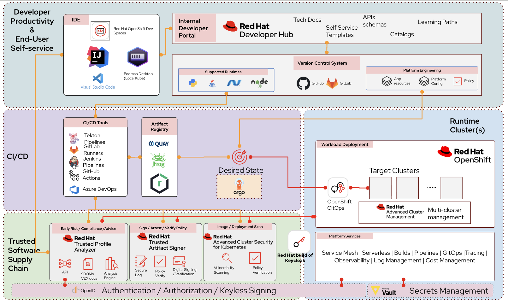

Meet Emma — A Day in the Software Factory
Now that you’ve learned what a Software Factory is, let’s see how it helps a developer during everyday software development.
In this lesson, you’ll follow Emma as she delivers her first application using her organization’s Software Factory.
| As you read through Emma’s journey, think about how similar steps are performed in your own organization. |
Meet Emma
Emma has just joined the engineering team.
She has been assigned her first feature and wants to start contributing immediately.
Instead of requesting infrastructure, configuring development environments, creating CI/CD pipelines, and learning deployment processes, Emma uses the organization’s Software Factory.
The platform provides everything she needs through a standardized self-service experience.
Emma’s Journey

Emma’s workflow (Click to expand)
Emma’s first day looks like this:
-
Sign in to the organization’s Developer Hub.
-
Choose a Golden Path for the application she wants to build.
-
Launch a ready-to-use development workspace using Dev Spaces.
-
Write code and commit the changes to Git.
-
The platform automatically builds and validates the application.
-
Security and compliance checks run automatically.
-
GitOps deploys the application to OpenShift.
-
The platform continuously monitors the running application.
Behind Every Step
Emma interacts with only a few simple interfaces, but many platform capabilities work together behind the scenes.
| Emma’s Activity | Platform Capability |
|---|---|
Find project templates |
Developer Hub |
Start coding |
Dev Spaces |
Store source code |
GitHub or GitLab |
Build and test applications |
OpenShift Pipelines |
Perform security validation |
Trusted Software Supply Chain |
Store trusted artifacts |
Quay |
Deploy applications |
GitOps |
Monitor running applications |
Platform Services |
Why This Matters
Without a Software Factory, Emma would need to:
-
Learn multiple development processes.
-
Configure development tools.
-
Build deployment pipelines.
-
Understand infrastructure.
-
Integrate security tooling.
With a Software Factory, these capabilities are already provided by the platform.
Emma focuses on delivering business features while the platform handles the underlying automation, security, and operational tasks.
|
A Software Factory doesn’t replace developers—it removes the repetitive platform work that slows them down, allowing developers to focus on writing application code. |
Reflection
Think about your own organization (Click to expand)
When a new developer joins your team:
-
How long does onboarding take?
-
Is there a standardized workflow?
-
Which activities are manual?
-
Which activities could be automated through a Software Factory?
Check Your Understanding
Quiz Time! (Click to expand)
Match Emma’s activity with the platform capability that supports it.
| Activity | Capability |
|---|---|
Find project templates |
? |
Start coding immediately |
? |
Automatically build applications |
? |
Deploy consistently |
? |
Store trusted container images |
? |
Answers
-
Find project templates → Developer Hub
-
Start coding immediately → Dev Spaces
-
Automatically build applications → OpenShift Pipelines
-
Deploy consistently → GitOps
-
Store trusted container images → Quay